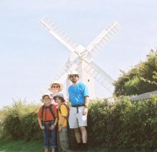

Urban Shipley
Images from 2002
Images From 2002
After we bought our house, we discovered a foundation problem. Here's a shot of
Dave on his way to China
.
We have
other pictures of our house
, both before and after the work we've done on it.
Rachel was
Hermione Granger
from Harry Potter for Halloween
Ben was Hermione's cat,
Crookshanks
, for Halloween
Ruth high on a firetower
in New Hampshire
Ben fishing
at his Grandparents' house in New Hampshire
Michael, Ellen, Rachel, Ben, and Jonathan
on the beach at Murphy's Point
Ben in front of the painted tulips at Ottawa City Hall
Rachel in front of a painted tulip at Ottawa City Hall
the Urban Shipleys in front of the tulips near Dow's Lake
and here's
another one
like that
Rachel and Ben in front of our house, May 2002
 Up to Our Family Home Page
Last Updated: 27 November 2022
WebMaster: Dave Shipley
dave@urbship.ca
© Copyright 2002-2022 David Urban Shipley
{kind=link}
{kind=link}
{kind=link}
{kind=link}
{kind=link}
{kind=link}
{kind=link}
{kind=link}
{kind=link}
{kind=link}
{kind=link}